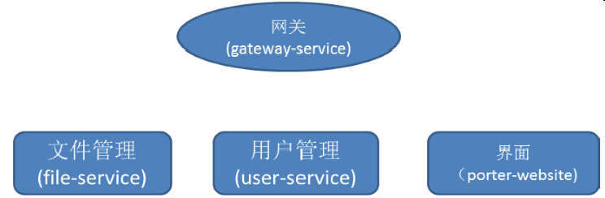

根据User Story，应用至少包含用户管理、文件管理等微服务，每个微服务都行使不一样的功能。下面是分解后设计的微服务结构：

网关：负责进行请求转发、用户认证以及其他内容，比如解决跨站访问、设置HTTP安全消息头等。通过设置防火墙，所有的请求都必须经过网关，这样就将内部服务与外部用户隔离起来，防止内部服务被非法访问。
文件管理：提供文件上传、删除等文件管理功能。
用户管理：提供认证、角色和权限管理等功能。
界面: 采用静态页面技术, html+js+css实现。界面可以作为一个单独的微服务，也可以直接放到网关服务里面。
为了可靠性，这些服务都应该支持分布式集群部署。因此在业务逻辑中涉及到并发和负载均衡的场景，都需要考虑无状态设计。可以给网关配置域名或者在上层再挂一个弹性负载均衡器，实现网关的多实例部署。
微服务设计好以后，可以通过已有项目快速搭建项目架子。可以从：
下载该项目。
初始的项目是一个maven项目，主要内容包括pom.xml文件、microservice.yam文件和一个Main函数。microservice.yam文件配置了微服务的基本信息和访问服务中心的地址。